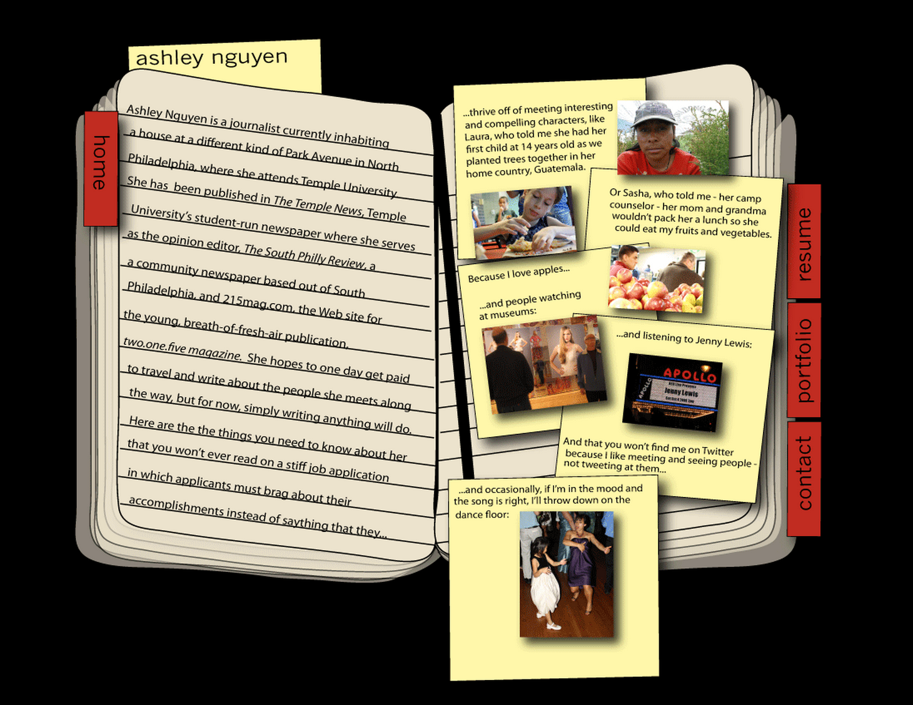

About this website:
The barebones
This website uses the Fredericka the Great and Roboto Slab fonts from Google fonts.
Like that header color? Me too. It's #c2f2df.
The slider on the home page uses carousel.js from Bootstrap.
Built using HTML + CSS.
See the code on my Github and copy it – but be warned it's not perfect!
How I really made this website
I paid a lot of money – $2,500 to be exact – to learn the basics of front-end web development at General Assembly (GA) in D.C. My employer chipped in $1,000.
To some, that’s chump change. For me, it was a major cut into my savings, but I figured it was less than grad school. There are also people who could never invest time or money into a $3,500-class.
It is true that you can learn without having to pay a cent as long as you have an Internet connection. Up until a certain level, there are free courses all over the web: Code Academy, Coursera, MIT’s open courseware, Code School, Khan Academy – the list goes on.
There are also free workshops and nonprofits like the popular D.C. Python class for women, Hear Me Code. People are banding together to help others learn for free, and that’s crucial.
Know yourself
It’s important to know your learning style. For example, I like class structure, a consistent schedule and homework. If you take online classes and free in-person courses, it’s really all on you. You have to self-regulate. And for a person like me who would much rather run outside than sit at a computer after work, that’s pretty hard.
You could make the argument that I would be more self-disciplined if I really wanted to learn, but taking sporadic in-person classes and online tutorials made me feel like I had no basis. I was missing the fundamentals necessary to fully comprehend the beginning stages of programming languages.
Teaching beginners
After comparing my first Hear Me Code class to the first GA lesson, I realized it’s really nice to learn with other beginners. At the Hear Me Code classes, the teachers started from scratch. They explained every term because the students were new to Python. Granted, Python is still confusing, but they made it simpler.
Throughout the GA class, I constantly had to ask the instructors to explain what certain words meant. What the hell is “var”? For people who have been coding for a long time, it’s like “the” in the English language. But for an absolute beginner, it’s just a meaningless symbol.
While there may be few programming instructors out there, it’s important to remember that defining every term in plain English is just as crucial as defining every variable in JavaScript.
The diversity discussion
People often talk about how the tech industry isn’t diverse enough. It’s pretty simple to diagnose why diversity problems exist in tech. As evidenced by the GA class cost, one is barrier to entry. You’ll surely find 100+ articles discussing how socioeconomic status, gender and race affects the likelihood that you’ll be the next junior developer at a startup.
I’ve interviewed a few computer programmers, and men often say they’ve been playing around with code since they were young. In the GA class, the teacher joked he “hadn’t used Dreamweaver since the 7th grade.” (In 7th grade, I frequented AIM and not much else.) The two TAs in the class, also men, were young but pretty well-versed in programming languages.
We've all heard it so many times now, but it's true: Girls weren't encouraged to play with computers a decade ago. It doesn't mean those GA teachers learned easily, but it does mean some women in the class were never presented with the choice to learn programming at all. Despite amazing organizations like Girls Who Code and Girl Develop It, we're very much playing catch-up with growing girls today.
On journalism + tech
The last time I had to “code” anything was as a sophomore in college at Temple. Combining my love of Moleskines with my clips from three local news sites, I made a website using Dreamweaver and some amateur Illustrator skills. That was fun, I thought – and I’ll probably never have to code a damn thing again.
In 2010 – which isn’t that far back – the journalism department was still obsessed with multimedia. And by multimedia, we’re talking video and audio slideshows. No one told me to go find enough spreadsheets to feed three data scrapers.
After school, I got my first job at Philly.com reporting. We used social media to interact with the community, but otherwise, I just needed to know how to use the Clickability CMS.
Then I went to Peace Corps for two years. When I got back, everything had changed. It seemed like, in order to jump back into journalism and stay competitive, I needed to learn how to code.
After taking this class, I realized knowing HTML, CSS and JavaScript isn’t 100 percent necessary to secure my place in journalism. (In fact, I need to learn even more to do that: Data mining, scraping websites, amping up my jquery abilities, etc. It’s hard to know everything.)
But in reality, I’m a storyteller, and those people still need to exist in order for news organizations to pay tech-savvy people to make data visualizations. Fortunately, we need each other.